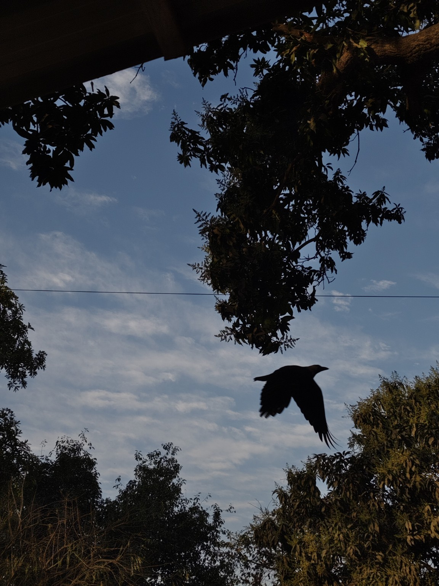
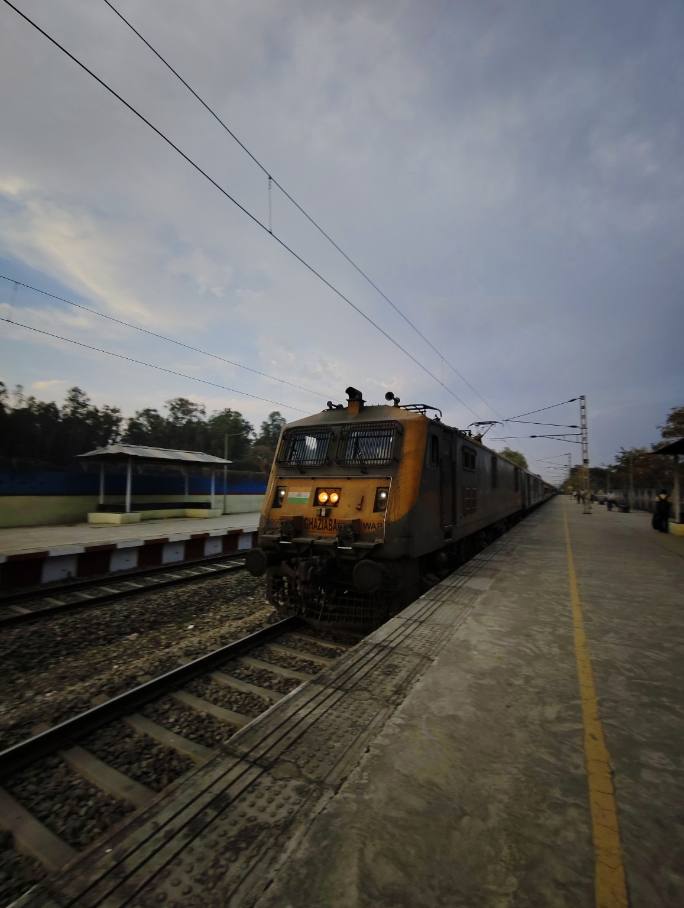
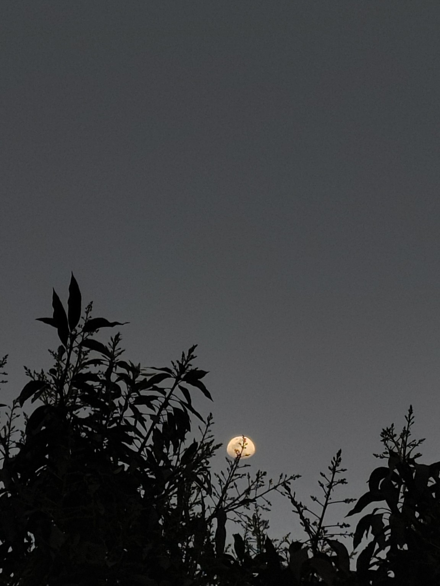
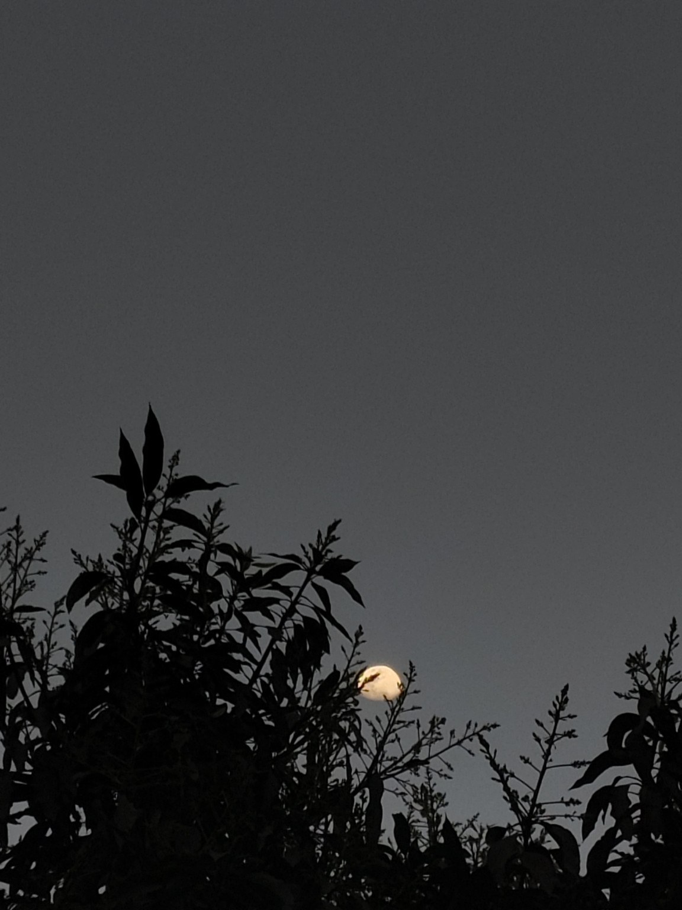

Photography
Mobile photography, composition, natural light and visual storytelling.
B.Tech Student • Photographer • Creator
I’m Vidyanshu Anand — exploring technology, programming, AI, photography and video editing while building my journey one project at a time.
ABOUT ME
I’m a first-year B.Tech student building a strong foundation in engineering, programming and problem solving.
Outside academics, I love photography and video editing. I enjoy finding interesting light, composition and stories in everyday places — then bringing those ideas to life digitally.
WHAT I DO
Mobile photography, composition, natural light and visual storytelling.
Cinematic edits, reels, transitions and short-form storytelling.
Learning programming fundamentals and turning concepts into practical projects.
Exploring AI, software development and emerging technologies.
SELECTED PHOTOGRAPHY
A selection from my photography collection.








PROJECTS & JOURNEY
A space for your future Smart India Hackathon or college project — problem, solution, tech stack and outcome.
Showcase websites and applications as your programming journey grows.
Photography series, reels and video-editing projects that show your creative direction.
CONTACT
Open to learning, collaborations, college activities, creative projects and opportunities.
Email Me →